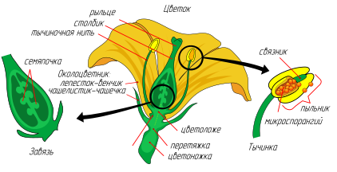
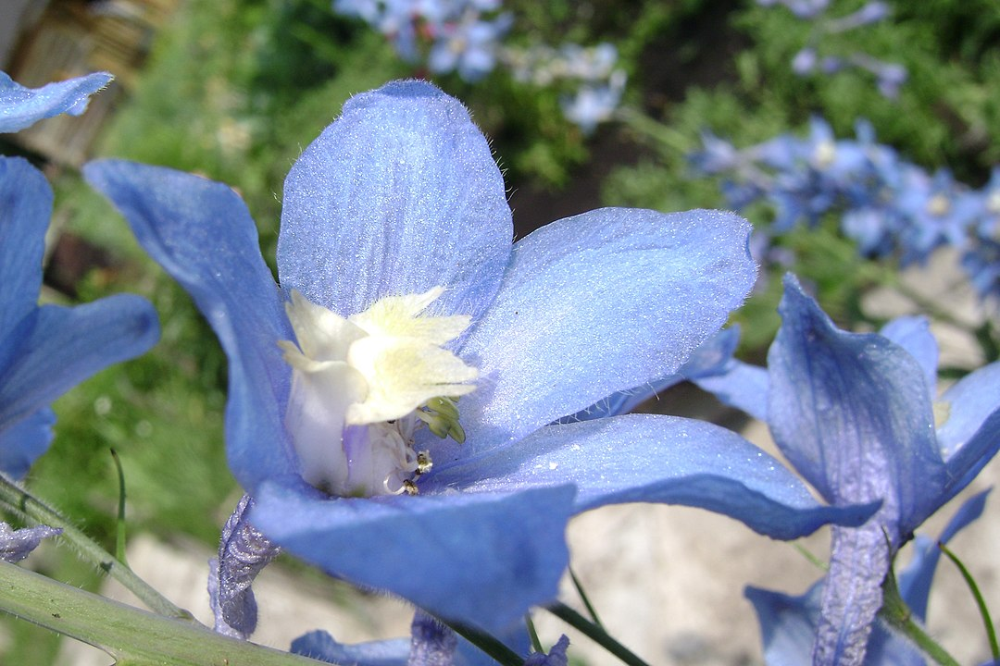
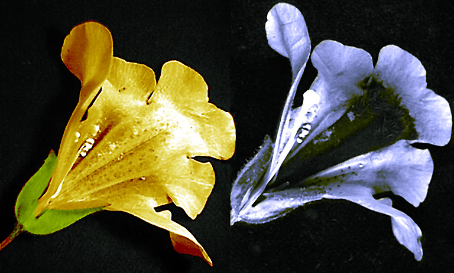

Гипотезы происхождения цветка
Из попыток понять происхождение наиболее типичного для покрытосеменных растений обоеполого цветка с так или иначе устроенным околоцветником родились основные гипотезы происхождения покрытосеменных как таксона.
Фолиарная теория
Теория, исходящая из гипотезы Иоганна Вольфганга Гёте, в соответствии с которой цветок есть укороченный побег и его элементы, кроме цветоложа, имеют листовое происхождение.
Псевдантовая теория
Время: начало XX века.
Основатели: А. Энглер, Р. Веттштейн.
Теория основана на представлении о происхождении цветковых от эфедроподобных и гнетоподобных голосеменных предков. Была разработана оригинальная концепция происхождения цветка — идея о независимом возникновении частей цветка как органов «sui generis». Предполагалось, что первичными у покрытосеменных были раздельнополые опыляемые ветром цветки с небольшим и строго фиксированным числом частей, а дальнейшая их эволюция шла по линии от простого к сложному.
Стробилярная, или эвантовая теория
Время: конец XVIII века — начало XX века.
Основатели: И. В. Гёте, О. П. Декандоль (типологические построения), Н. Арбер и Дж. Паркин.
Согласно этой теории, наиболее близки к искомым предкам покрытосеменных мезозойские беннеттиты, а исходный тип цветка представляется сходным с тем, что наблюдается у многих современных многоплодниковых: обоеполый энтомофильный цветок с удлинённой осью, большим и неопределённым числом свободных частей. Дальнейшая эволюция цветка в пределах покрытосеменных имела редукционный характер.
Теломная теория
Основная статья: Телом
Время: с 30-х годов XX столетия.
Основатель: В. Циммерман.
Согласно этой теории, все органы высших растений происходят и независимо развиваются из теломов; высшие растения с настоящими корнями и побегами происходят от риниофитов, тело которых было представлено системой дихотомически ветвящихся простых цилиндрических осевых органов — теломов и мезомов. В ходе эволюции в результате перевершинивания, уплощения, срастания и редукции теломов возникли все органы покрытосеменных растений. Листья семенных растений возникли из уплощённых и сросшихся между собой систем теломов; стебли — благодаря боковому срастанию теломов; корни — из систем подземных теломов. Основные части цветка — тычинки и пестики — возникли из спороносных теломов и эволюционировали независимо от вегетативных листьев.
Строение цветка

Цветок состоит из стеблевой части (цветоножка и цветоложе), листовой части (чашелистики, лепестки) и генеративной части (тычинки, пестик или пестики). Цветок занимает апикальное положение, но при этом он может располагаться как на верхушке главного побега, так и бокового. Он прикрепляется к стеблю посредством цветоножки. Если цветоножка сильно укорочена или отсутствует, цветок называется сидячим (подорожник, вербена, клевер). На цветоножке располагаются также два (у двудольных) и один (у однодольных) маленьких предлиста — прицветника, которые часто могут отсутствовать. Верхняя расширенная часть цветоножки называется цветоложем, на котором располагаются все органы цветка. Цветоложе может иметь различные размеры и форму — плоскую (пион), выпуклую (земляника, малина), вогнутую (миндаль), удлинённую (магнолия). У некоторых растений в результате срастания цветоложа, нижних частей покрова и андроцея образуется особая структура — гипантий. Форма гипантия может быть разнообразной и иногда участвовать в образовании плода (цинарродий — плод шиповника, яблоко). Гипантий характерен для представителей семейств розовых, крыжовниковых, камнеломковых, бобовых.
Части цветка делят на фертильные, или репродуктивные (тычинки, пестик или пестики), и стерильные (околоцветник).
Околоцветник
Околоцветник — стерильная часть цветка, защищающая более нежные тычинки и пестики. Элементы околоцветника называются листочками околоцветника, или сегментами околоцветника. У простого околоцветника все листочки одинаковы; у двойного — дифференцированы. Зелёные листочки двойного околоцветника образуют чашечку и называются чашелистиками, окрашенные листочки двойного околоцветника образуют венчик и называются лепестками. У подавляющего большинства растений околоцветник двойной (вишня, колокольчик, гвоздика). Простой околоцветник может быть чашечковидным (щавель, свёкла) либо (что бывает чаще) венчиковидным (гусиный лук). У небольшого числа видов цветок вообще лишён околоцветника и поэтому называется беспокровным, или голым (белокрыльник, ива).
Чашечка состоит из чашелистиков и образует наружный круг околоцветника. Основной функцией чашелистиков является защита развивающихся частей цветка до его распускания. Иногда венчик полностью отсутствует, или сильно редуцирован, а чашелистики принимают лепестковидную форму и ярко окрашены (например, у некоторых лютиковых). Чашелистики могут быть обособлены друг от друга или срастаться между собой.
Запрос «Венчик» перенаправляется сюда; см. также другие значения.
Венчик (лат. corolla) образован различным количеством лепестков и образует следующий за чашечкой круг в цветке. Происхождение лепестков может быть связано с вегетативными листьями, но у большинства видов они представляют собой утолщённые и разросшиеся стерильные тычинки. Вблизи основания лепестков иногда образуются дополнительные структуры, которые в совокупности называют привенчиком. Как и чашелистики, лепестки венчика могут срастаться с собой краями (сростнолепестный венчик) или оставаться свободными (свободнолепестный, или раздельнолепестный венчик). Особый специализированный тип венчика — венчик мотылькового типа — наблюдается у растений из подсемейства Мотыльковые семейства Бобовые.
Венчик, как правило, самая заметная часть цветка, отличается от чашечки более крупными размерами, разнообразием окраски и формы. Обычно именно венчик создаёт облик цветка. Окраску лепестков венчика определяют различные пигменты: антоциан (розовая, красная, синяя, фиолетовая), каротиноиды (жёлтая, оранжевая, красная), антохлор (лимонно-жёлтая), антофеин (коричневая). Белая окраска связана с отсутствием каких-либо пигментов и отражением световых лучей. Чёрного пигмента тоже не бывает, а очень тёмная окраска цветов представляет собой очень сгущённые тёмно-фиолетовые и тёмно-красные цвета. Венчики некоторых растений в ультрафиолетовом свете выглядят иначе, чем в видимом — имеют различные узоры, пятна, линии[1]. Всё это могут видеть пчёлы, для которых различно окрашенные в ультрафиолете участки служат указателями нектара (англ. Nectar guide)[2]:63.
Аромат цветков создают летучие вещества, главным образом эфирные масла, которые образуются в клетках эпидермы лепестков и листков околоцветника, а у некоторых растений — в осмофорах (особых различной формы желёзках, имеющих секреторную ткань), могут образовываться также и в специальных железистых трихомах (волосках). Выделяющиеся эфирные масла обычно сразу испаряются.
Роль венчика заключается в привлечении насекомых-опылителей. Кроме того, венчик, отражая часть спектра солнечных лучей, днём предохраняет тычинки и пестики от перегрева, а закрываясь на ночь, создают камеру, препятствующую их охлаждению или повреждению холодной росой.
Репродуктивные части цветка
Репродуктивные части цветка
Тычинка — мужской репродуктивный орган цветка покрытосеменных растений. Совокупность тычинок называется андроцеем (от др.-греч. ἀνήρ, родительный падеж ἀνδρός — «мужчина» и οἰκία — «жилище»).
Большинство ботаников считают, что тычинки являются видоизменёнными микроспорофиллами неких вымерших голосеменных растений.
Количество тычинок в одном цветке у разных покрытосеменных широко варьируется от одной (орхидные) до нескольких сотен (мимозовые). Как правило, число тычинок постоянно для определённого вида. Нередко расположенные в одном цветке тычинки имеют разное строение (по форме или длине тычиночных нитей).
Тычинки могут быть свободными или сросшимися. По числу групп сросшихся тычинок различают разные типы андроцея: однобратственный, если тычинки срастаются в одну группу (люпин, камелия); двубратственный, если тычинки срастаются в две группы; многобратственный , если многочисленные тычинки срастаются в несколько групп; братственный — тычинки остаются несросшимися.
Тычинка состоит из тычиночной нити, посредством которой она нижним концом прикреплена к цветоложу, и пыльника на её верхнем конце. Пыльник имеет две половинки (теки), соединённые связником, являющимся продолжением тычиночной нити. Каждая половинка разделена на два гнезда — два микроспорангия. Гнёзда пыльников иногда называют пыльцевыми мешками. Снаружи пыльник покрыт эпидермой с кутикулой и устьицами, затем располагается слой эндотеция, за счёт которого при подсыхании пыльника вскрываются гнёзда. Глубже в молодом пыльнике проходит средний слой. Содержимое клеток самого внутреннего слоя — тапетума — служит питанием для развивающихся материнских клеток микроспор (микроспороцитов). В зрелом пыльнике перегородки между гнёздами чаще всего отсутствуют, исчезает тапетум и средний слой.
Разделение полов
Цветки бывают обоеполые (одновременно имеющие как пестики, так и тычинки) и однополые (мужские, или тычиночные, если цветки имеют только тычинки, — и женские, или пестичные, если цветки имеют только пестики).
Различают однодомные, двудомные и многодомные растения — в зависимости от того, на одном или разных растениях одного вида могут находиться мужские, женские и обоеполые цветки.
Развитие цветка
Органы, составляющие зрелый цветок, располагаются кругами: снаружи круг из чашелистиков, затем из лепестков, тычинок и в центре — из плодолистиков, образующих пестики. Считается, что они являются видоизменёнными листьями или выростами стебля. Эту идею впервые высказал И. В. Гёте в XVIII веке, назвав цветы «изменёнными листьями». Подобная точка зрения подтверждается результатами исследований гомеозисных мутаций. Изучение гомеозиса привело к формулировке ABC-модели развития цветка[4].
Цикличность цветка
У большинства растений части цветка образуют хорошо заметные мутовки или круги (циклы). Наиболее распространены пяти- и четырёхкруговые, то есть пента- и тетрациклические цветки. Число частей цветка на каждом круге может быть различным. Чаще всего цветки бывают пентациклическими: два круга околоцветника (чашечка и венчик), два круга тычинок (андроцей) и один круг из плодолистиков (гинецей). Такое расположение цветков характерно для лилейных, амариллисовых, гвоздичных, гераниевых. У тетрациклических цветков обычно развивается два круга околоцветника: один круг андроцея и один круг гинецея (ирисовые, орхидные, крушинные, бересклетовые, норичниковые, губоцветные и др.).